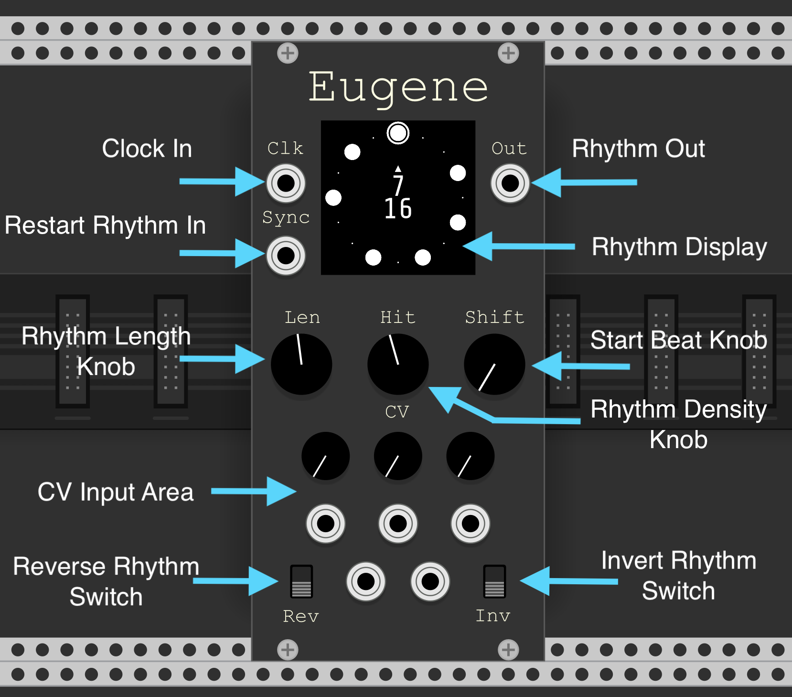
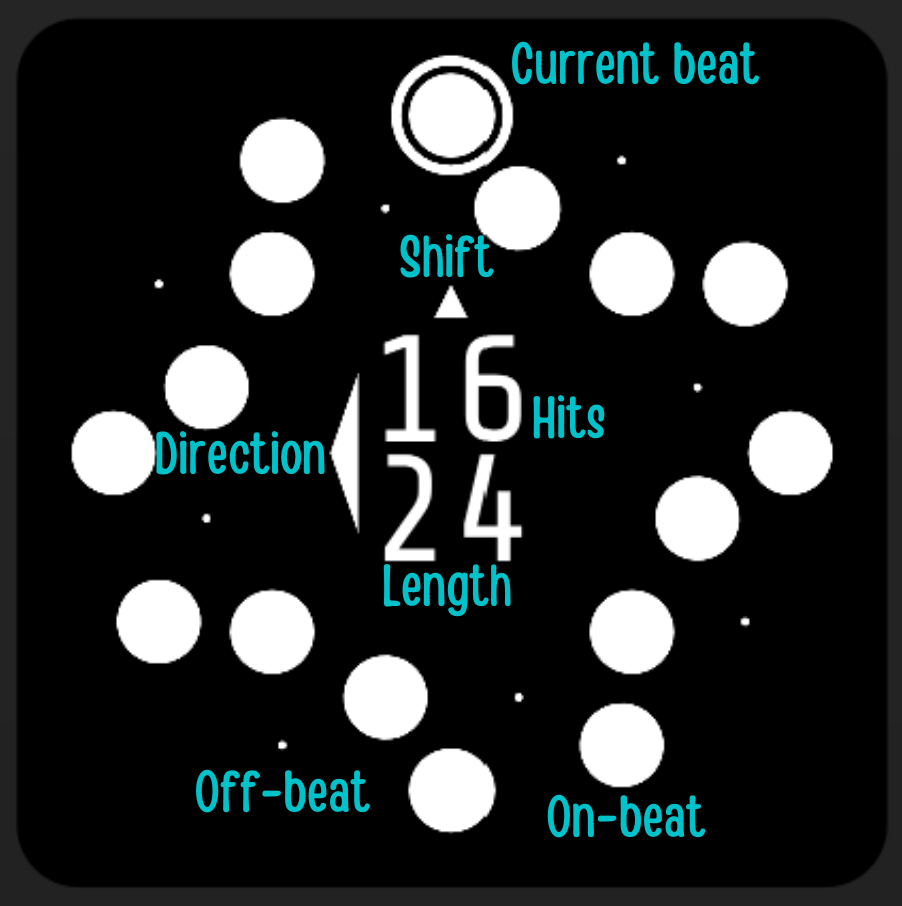
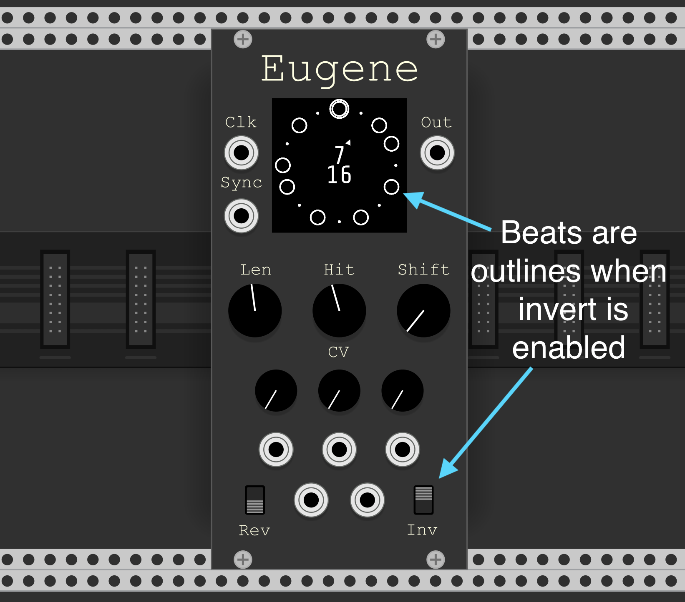
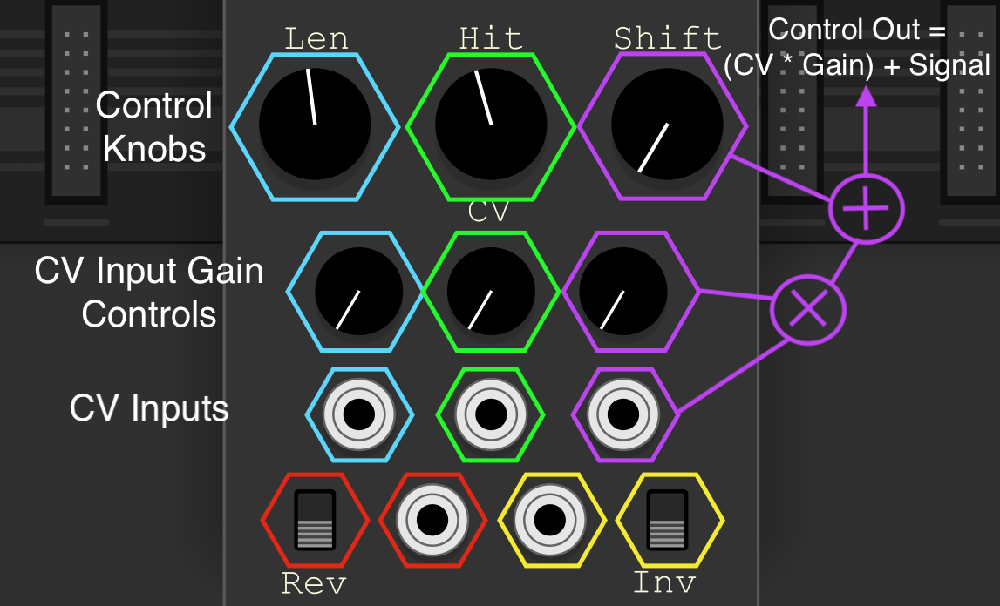

Orbits Manual
Eugene
Eugene is a Euclidean Rhythm Generator plugin for VCV Rack.
Specifications
- Euclidean Rhythms up to 32 beats long
- Rhythms are both reversible and invertible
- External clock input
- Sync input for syncing the start of the rhythm with another signal
- Shift knob for selecting the initial beat of the rhythm
- Lots of CV controllable parameters
Panel


Out : Output
A pulse is output when an on-beat (hit) is clocked. 0-10V Unipolar CV 1ms pulse duration.
Clk : Input
On pulse advances the current beat. Schmitt triggered.
Sync : Input
On pulse resets the current beat to the first beat of the rhythm. Schmitt triggered.
Len : Input
The number of beats in the rhythm. Integer range between 1 to 32 inclusive.
Hits : Input
The number of on-beats in the rhythm, or the density. Integer range between 0 and the current Length inclusive.
Shift : Input
Sets the beat in the rhythm to start from. A sync pulse will reset the current beat to this beat. Integer range between 0 and the current Length - 1 inclusive.
Reverse : Input
Sets the direction that the clock advances the beat. Clockwise when Off, Anticlockwise when On.
Invert : Input
Inverts the Euclidean algorithm. When this switch is on on-beats become off-beats and off-beats become on-beats. Visually you can tell this is enabled by the on-beats being represented as empty circles rather than whole ones.

CV : Input
All manually controlled inputs are also CV controllable.
Len, Hits and Shift have +-5V bipolar CV inputs with a knob for adjusting CV gain. The CV is summed with the current knob setting.
Reverse and Invert have Schmitt triggered CV inputs that override the switch settings.
